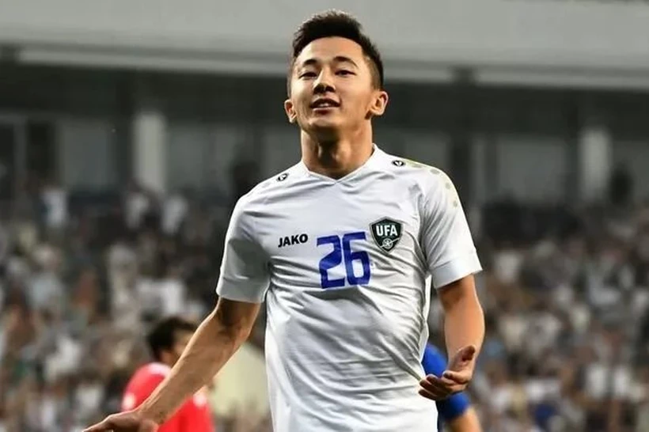

ABBOSBEK FAYZULLAYEV HAQIDA MA'LUMOTLAR
Abbosbek Fayzullaev (2003-yil 3-oktabrda tugʻilgan) – oʻzbek futbolchisi, SSKA Moskva klubi va Oʻzbekiston U23
futbol terma jamoasi yarimhimoyachisi. U 2023-yil dunyoning eng yaxshi yosh futbolchisi nomiga daʼvogarlar
roʻyxatiga kirgan futbolchilardan biri.
Abbosbek Fayzullaev 2003-yil 3-oktabrda Sirdaryo viloyatida tugʻilgan. Shuningdek Abbosbek Fayzullaev – Paxtakor
futbol akademiyasi bitiruvchisi hisoblanadi. 2021-yilgacha Abbosbek Fayzullaev Paxtakor klubi oʻrinbosarlar
tarkibida harakat qilgan[4]. Abbosbek Fayzullaev transfermarktdagi narxi 6 mln yevroni tashkil etadi (2024-yil
5-sentabrdagi maʼlumot).
Abbosbek Fayzullaev 2021-yilgacha Paxtakor klubi oʻrinbosarlar tarkibida harakat qildi. Paxtakor klubi
oʻrinbosarlar tarkibida 21 ta oʻyin oʻtqazadi va 8ta gol kiritdi. 2021-yil muvaffaqiyatli oʻyinidan soʻng
Paxtakor murabbiylar shtabi tomonidan asosiy jamoaga jalb etildi. Abbosbek Fayzullaev Paxtakor safida birinchi
mavsumida Oʻzbekiston superligasida 6 ta, Oʻzbekiston kubogida 1 ta va Osiyo chempionlar ligasida 2 ta oʻyin
oʻtqazadi va umumiy hisobda 280 daqiqa maydonda harakat qildi.
Abbosbek Fayzullayev 2023-yil 27-iyulda SSKA Moskva jamoasi bilan 3+1 shaklida shartnoma imzoladi[6][7]. 19
yoshli Fayzullayev 500 ming yevroga transfer qilindi.
19-avgust kuni „Dinamo“ga qarshi oʻyinda (1:2) Fayzullayev 87-daqiqada zaxiradan maydonga tushib yangi klubida
debyut qildi[11]. 24-sentyabr kuni „Rostov“ga qarshi oʻyinda (3:3) SSKA Moskva jamoasi safida oʻzining birinchi
golini kiritdi[12].
Abbosbek Fayzullaev 2021-yil 30-oktabrda Bangladesh U-23 jamoasiga qarchi oʻrtoqlik oyiniga Temur Kapadze
tomonidan jalb etildi va shu tariqa terma jamoadagi debyutini oʻtqazdi.
2022-yil Oʻzbekistonda boʻlib oʻtgan AFC U-23 Osiyo chempionati uchun Oʻzbekiston U23 yakuniy 23 ta futbolchidan
iborat qaydnomasiga kiritildi[15]. 2023-yilgi OFK U-20 Osiyo Kubogi uchun 20 yoshgacha boʻlganlar terma
jamoasiga chaqirildi va musobaqada eng yaxshi futbolchi boʻldi. Finalda Iroqqa qarshi oʻyinda u penaltidan
gʻalaba qozonib, jamoasining 1:0 hisobidagi gʻalabasini taʼminladi, chunki jamoadoshi Umarali Rahmonaliyev
penaltini golga aylantirib, Oʻzbekistonga 20 yoshgacha boʻlganlar oʻrtasidagi Osiyo kubogi tarixidagi ilk
chempionlikni taqdim etdi. Oʻz harakatlari bilan u turnirning eng futbolchisi oʻyinchisi deb topildi[16].
2023-yilning 6-iyun kuni Fayzullaev Oʻzbekiston terma jamoasi safida futbol boʻyicha Markaziy Osiyo
chempionatida Ummonga qarshi oʻyinning 73-daqiqasida zaxiradan maydonga tushgandi. Uch kundan soʻng u
Tojikistonga qarshi guruh oʻyinida zaxiradan maydongga tushib, oʻzining terma jamoa safida birinchi xalqaro
golini urdi, bu oʻyinda 5:1 hisobida gʻalaba qozondi. Turnir finalida Eronga qarshi oʻyinda magʻlub boʻldi.
2023-yilda Qatarda boʻlib oʻtayotgan Osiyo kubogida Hindiston ustidan 3:0 hisobidagi gʻalabada oʻz hissasini
qoʻshdi.
